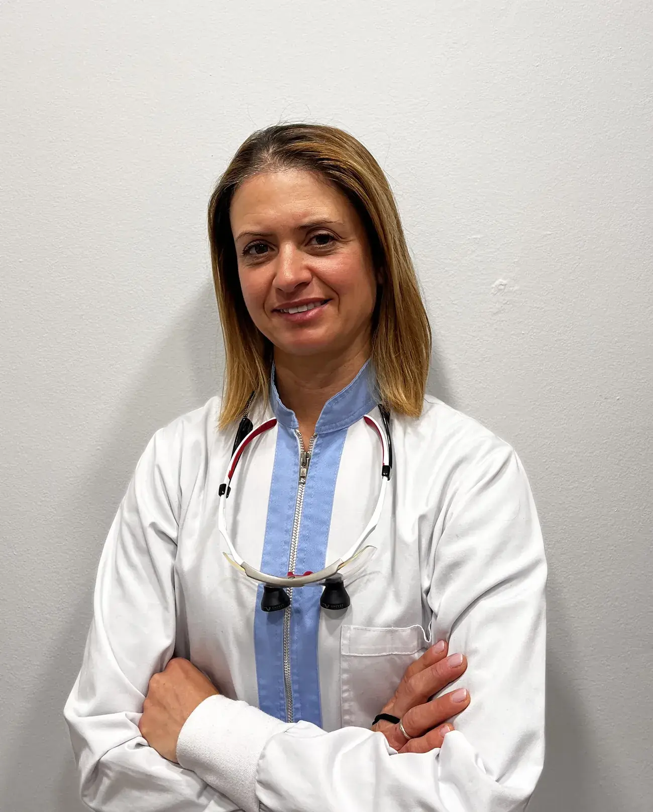
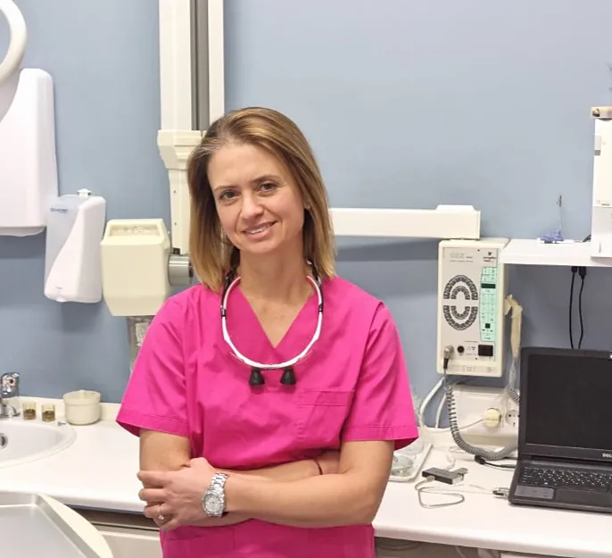
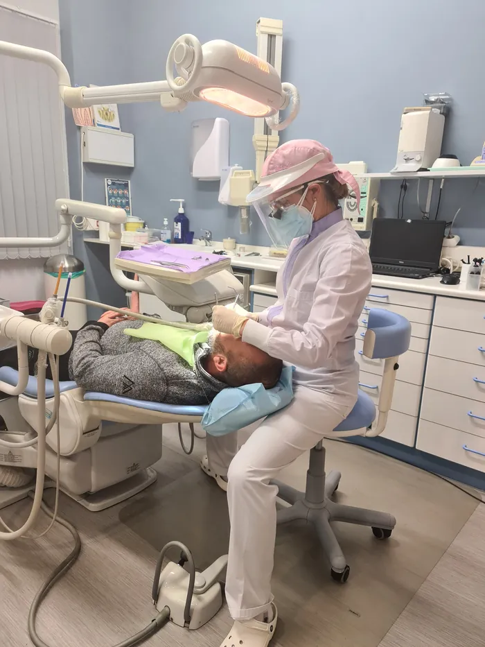
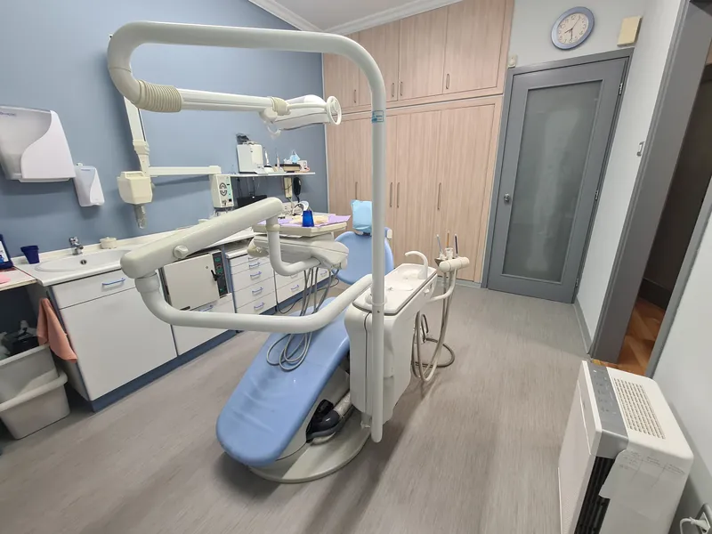
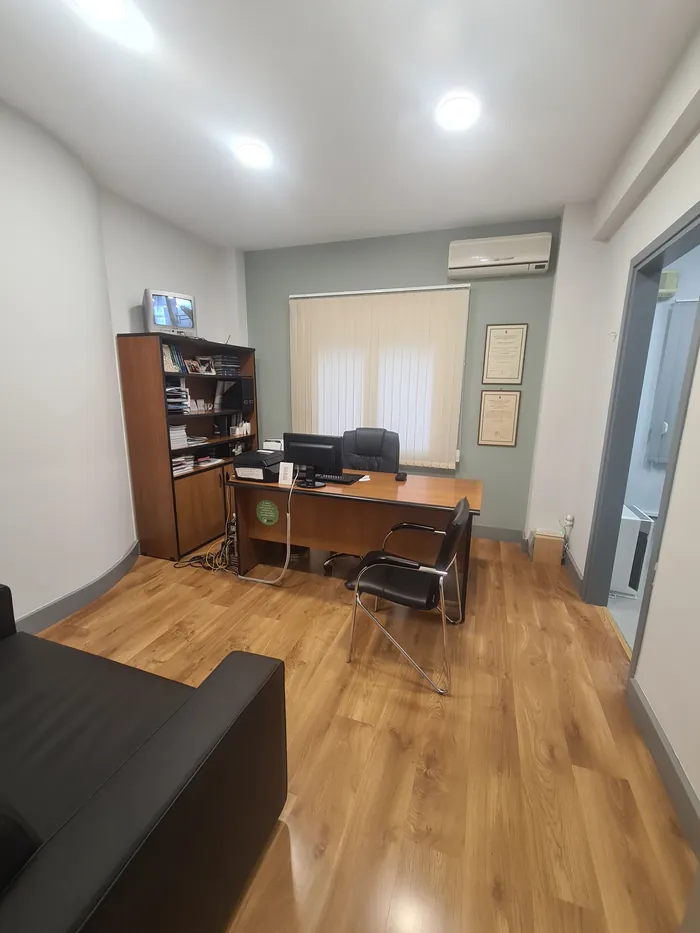
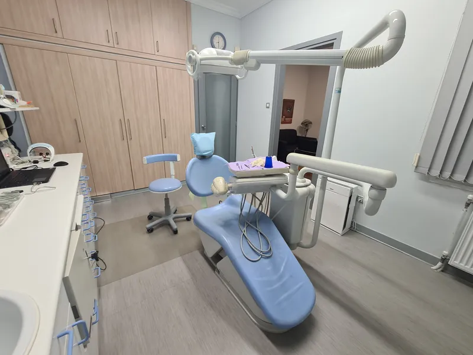
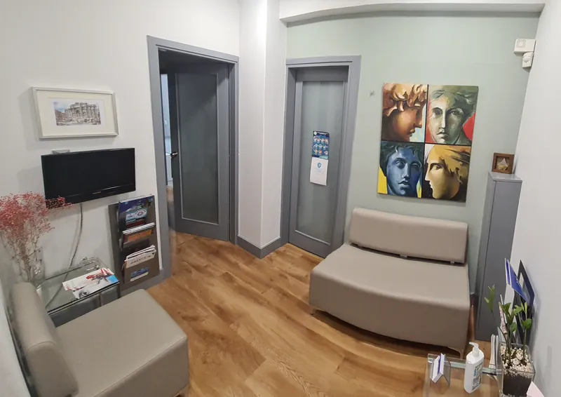

Οδοντιατρείο στο Παγκράτι · από το 2000
Θωμαή ΖορμπάΧειρουργός ΟδοντίατροςDDS, MSc Dental Biomaterials
Στο ιατρείο μας στο Παγκράτι συνδυάζουμε την εξειδικευμένη γνώση και την εμπειρία με τη διαρκή εκπαίδευση και την ενασχόληση με τις διεθνείς επιστημονικές εξελίξεις.

Η ιατρός
Εμπειρία, γνώση, διαρκής εκπαίδευση

Το 1994 η Θωμαή Ζορμπά εισήχθη στην Οδοντιατρική Σχολή Αθηνών (www.dent.uoa.gr), από όπου αποφοίτησε το 1999.
Από το 2000 ως το 2002 συνέχισε τις μεταπτυχιακές της σπουδές στο ίδιο πανεπιστήμιο, όπου απέκτησε MSc στα Οδοντιατρικά Βιοϋλικά. Παράλληλα ήταν επιστημονική συνεργάτις στην κλινική της Οδοντιατρικής Σχολής. Από το 2000 διατηρεί ιδιωτικό ιατρείο.
Στο ιατρείο μας, η έμπειρη οδοντίατρος Θωμαή Ζορμπά και επιλεγμένοι συνεργάτες διαφόρων ειδικοτήτων συνδυάζουν την εξειδικευμένη γνώση και την εμπειρία με τη διαρκή εκπαίδευση και την ενασχόληση με τις διεθνείς επιστημονικές εξελίξεις.
Υπηρεσίες
Ολοκληρωμένη φροντίδα, από την πρόληψη ως τα εμφυτεύματα
Επιλέξτε κατηγορία και δείτε σε ποιο σημείο του δοντιού αφορά κάθε θεραπεία.
Βιογραφικό
Σπουδές και πορεία
Εκπαίδευση & εμπειρία
Επιστημονικές εργασίες
- Προχωρημένη περιοδοντίτιδα – μετάβαση στη νωδότητα – η συμβολή των ενδιάμεσων οδοντοστοιχιώνΠαρουσιάστηκε στο 20ό Πανελλήνιο Οδοντιατρικό Συνέδριο
- Η σχεδίαση και κατασκευή οδοντοστοιχιών με περιστροφική φορά ένθεσηςΔημοσιεύτηκε στα «Ελληνικά Στοματολογικά Χρονικά», τόμος 47, 2003
- Η επίδραση της φωτογήρανσης στη χρωματική μεταβολή σιλικονούχων ελαστομερών υλικών για γναθοπροσωπικές προσθέσειςΜεταπτυχιακή διπλωματική εργασία, Εργαστήριο Οδοντιατρικών Υλικών
- Νέα υλικά και τεχνικές στην ενδοδοντία: η χρήση του MTA στις ιατρογενείς διατρήσεις
Γλώσσες & συνεχής επιμόρφωση
Συμμετέχει σε επιστημονικά συνέδρια και συμπόσια σε ετήσια βάση. Πιστοποιητικά διαθέσιμα εφόσον ζητηθούν.
Ο χώρος
Ένα σύγχρονο ιατρείο στο Παγκράτι
Φωτεινοί, καθαροί και προσεγμένοι χώροι, ώστε κάθε επίσκεψη να είναι ήρεμη και ασφαλής.





Κριτικές
Τι λένε οι ασθενείς
Πρώτη φορά επισκέφτηκα τη γιατρό και γνώρισα μια άριστη επαγγελματία, ευγενέστατη, συνεπέστατη, χωρίς καμία καθυστέρηση στους χρόνους των ραντεβού. Σου εμπνέει εμπιστοσύνη και ασφάλεια από την πρώτη στιγμή. Χωρίς πόνο! Τηρεί τους κανόνες υγιεινής (covid), αξία ανεκτίμητη!!! Συστήνεται ανεπιφύλακτα!.
Ερωτήσεις
Συχνές ερωτήσεις
Επικοινωνία
Κλείστε το ραντεβού σας
Καλέστε μας και θα βρούμε μαζί την ώρα που σας εξυπηρετεί.
Το ιατρείο βρίσκεται στο Παγκράτι, στην οδό Φιλολάου 55, στη γωνία με την οδό Χρεμωνίδου.